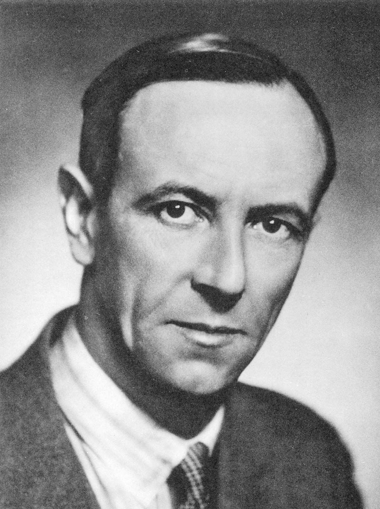

JAMES CHADWICK (1932)
Born on October 20, 1891 in Bollington, Cheshire, England, Sir James Chadwick was a British physicist. He is credited with the discovery of the neutron in 1932, for which he was awarded the Nobel Prize in Physics in 1935. In 1941, he wrote the MAUD Report, a report on the feasibility of atomic weapons. This report inspired the United States government to work on atomic weapon technology. Chadwick was the head of the British team on the Manhattan Project, working on nuclear weapons. He was knighted for his achievements in physics in 1945.
Contributions to Atomic Theory
Under the leadership of Ernest Rutherford, James Chadwick discovered the neutron in 1932 at Cavendish Laboratory at Cambridge University. Using radioactive polonium, he shot an alpha particle into beryllium, which absorbed the radiation, and became carbon, but also created another particle. It was originally believed that this other particle was actually gamma radiation, but when Chadwick measured this new particle, he found it had no charge but the same mass as a proton. This particle was the neutron, and Chadwick was awarded the Nobel Prize in Physics in 1935 for his discovery.
Experiments/Work